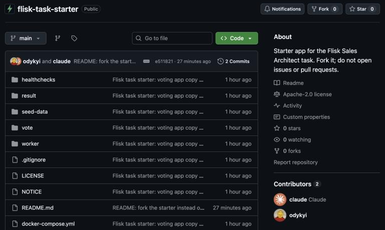

Technical: make it run 75 min
What: Make a real 5-service app (Python, Node.js, .NET, Redis, Postgres) start with one flisk up. You need Git, Node.js, Docker and Tilt. If flisk up stops, run npx @flisk-sh/flisk doctor: it names what is missing and how to fix it.
- Fork the starter. Open flisk-sh/flisk-task-starter and press Fork (top right), then Create fork.

The starter. Press Fork, top right. - Clone your fork.
git clone https://github.com/YOUR-LOGIN/flisk-task-starter cd flisk-task-starter
- See the plan. Nothing is written yet. Read what Flisk could not translate: that is your first friction.
$ npx @flisk-sh/flisk import . --dry-run Found 5 service(s) and 0 job(s) in ~/flisk-task-starter Read only: docker-compose.yml. Lines below name what was not translated. .flisk/project.json [create Flisk project] … vote (service, vote/) from: docker-compose.yml [compose] build: vote/ with Dockerfile port: 80 (from Compose) proxy: routed through Traefik health: / (assumed) depends: redis write: services/flisk-task-starter/vote/service.json [create] … Skipped / not fully imported: docker-compose.yml [compose]: service "vote" keys not translated: volumes, networks docker-compose.yml [compose]: service "result" publishes extra container ports (9229); Flisk routes only 80 docker-compose.yml [compose]: service "result" keys not translated: entrypoint, volumes, networks docker-compose.yml [compose]: service "worker" keys not translated: networks docker-compose.yml [compose]: service "redis" keys not translated: volumes, networks docker-compose.yml [compose]: service "db" keys not translated: volumes, networks docker-compose.yml [compose]: service "seed" has profiles ["seed"]; profiles are not enforced by Flisk Dry run: nothing written. - Write it and start it.
npx @flisk-sh/flisk import . npx @flisk-sh/flisk up
- Write your README and push. Replace the starter's
README.mdwith yours: how to start it, and a## What was hardsection. Thengit add -A && git commit -m "Run with Flisk" && git push.
Deliver Your fork with .flisk/project.json, a service.json per service, the starter's LICENSE and NOTICE, and your README.md.